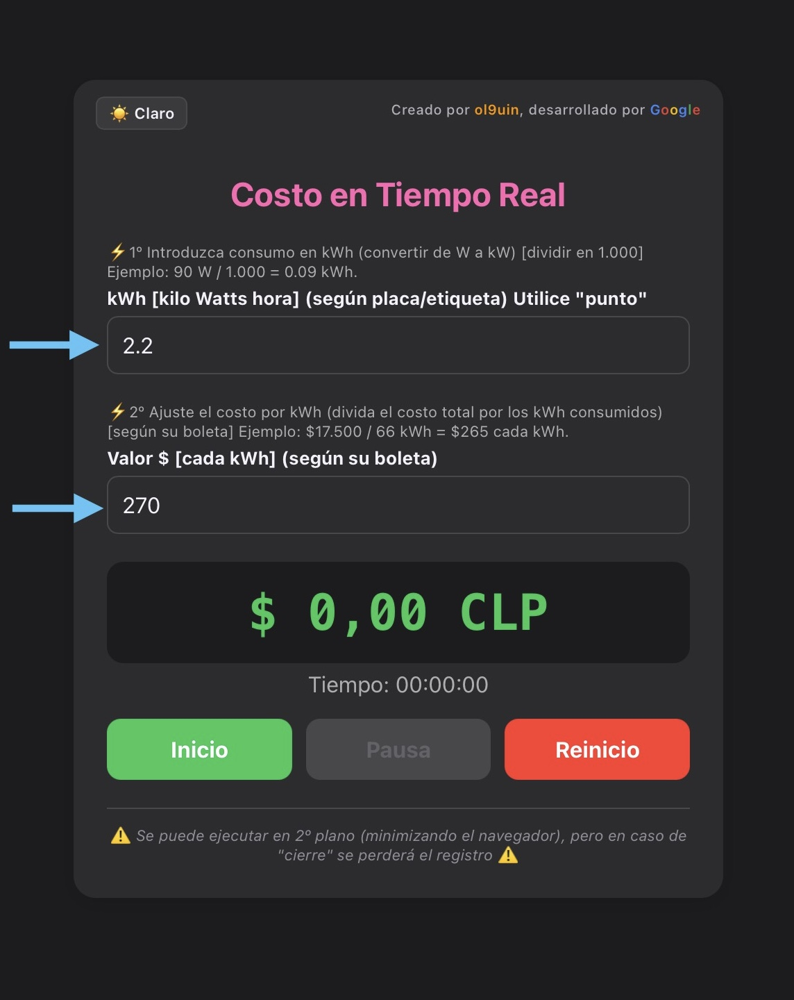
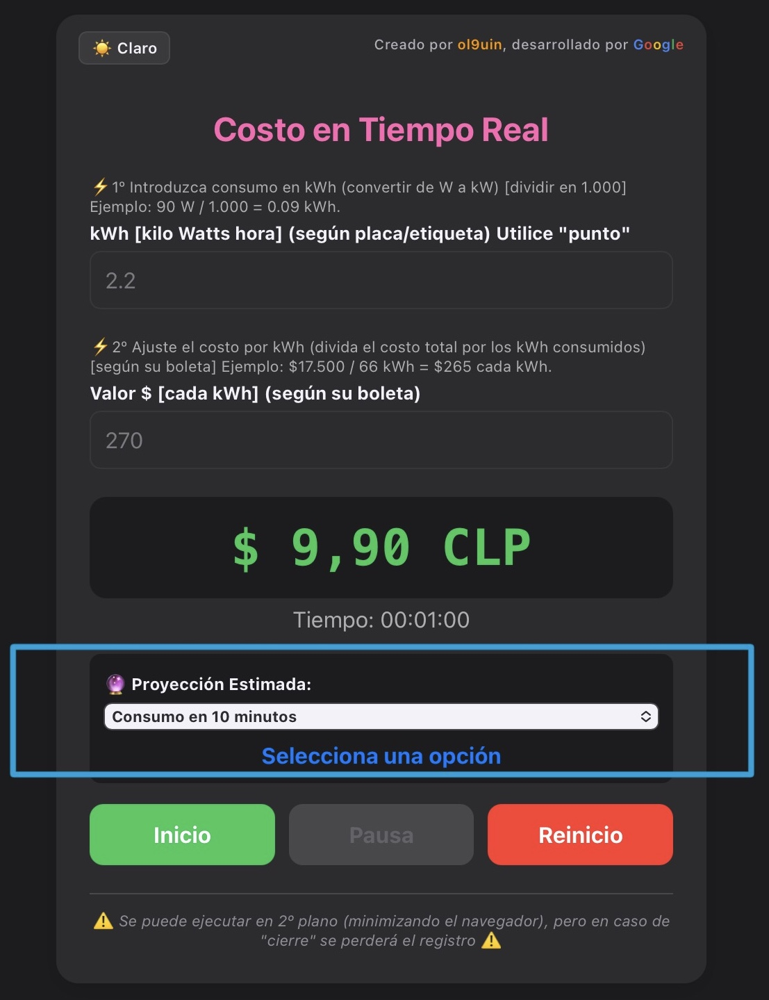
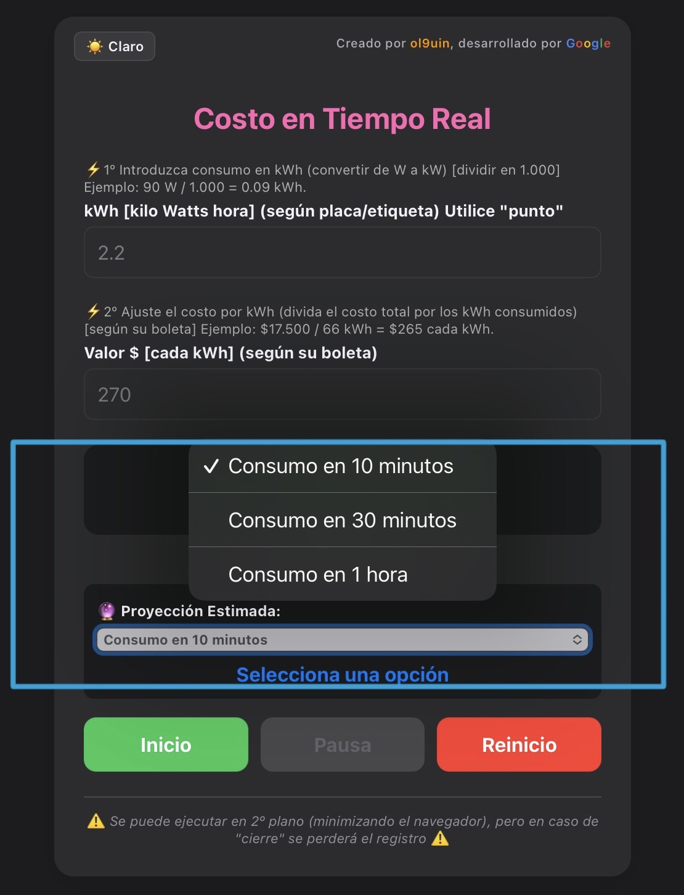
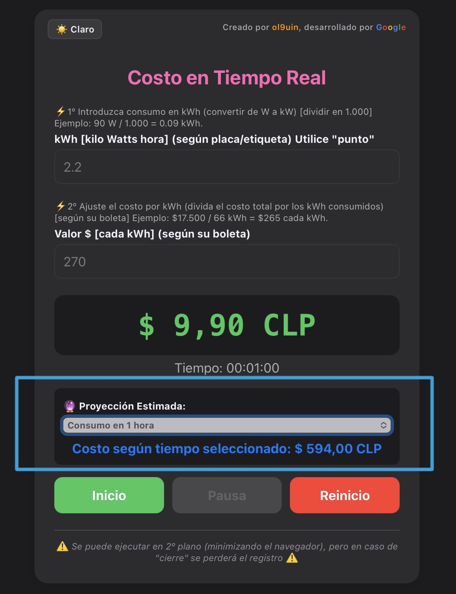

Paso 1: Preparación del Entorno
Antes de comenzar, asegúrate de tener descargados todos los archivos requeridos y tu área de trabajo completamente limpia.

Figura 1: Organización inicial de elementos necesarios.Paso 2: Conexión y Enlace
Establece la conexión vinculando el sistema local con el servidor. Verifica que los indicadores cambien a color verde.

Figura 2: Panel de control con estado conectado.Paso 3: Configuración de Parámetros
Ajusta las propiedades básicas del proyecto rellenando los campos de texto del formulario inicial según tus preferencias.

Figura 3: Formulario de ajustes de usuario.Paso 4: Verificación Final
Ejecuta la prueba general del sistema. La pantalla debe mostrar el mensaje de éxito indicando que el proceso concluyó correctamente.

Figura 4: Interfaz de confirmación de éxito.
⚠️ IMPORTANTE: Recuerda pulsar el botón [Listo] en la esquina superior para continuar con el atajo; de lo contrario, este se cerrará y perderás el progreso.